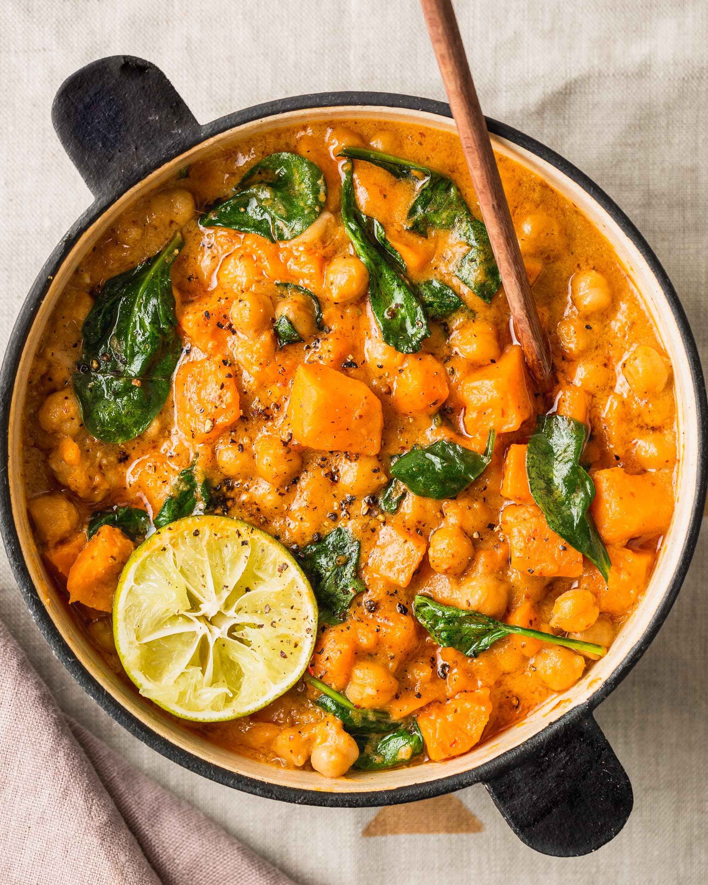

Vegetarian Curry
Hearty and filling vegetable curry
This vegeatble curry recipe is perfect for a quick meal or can be refridgerated or frozen
Serves 2
Ingredients
3 sweet potatoes
1 large onion
2 cups of peas
1 cup of green lentils
2 large carrots
1 portion of curry roux
2 cups or rice
1 pinch of Salt and Pepper
Steps
Peal the sweet potatoes and chop into small pieces.
Peal the carrots and chop into small pieces.
Remove the skin of the onion and chop into small pieces.
Add the potatoes, onions and green peas to a large pan and fill with water.
Add green lentils to a seperate pan and fill with water.
Bring the pan with potatoes, carrots and peas to the boil then turn down the heat and simmer.
Add the block of curry roux, salt and pepper to the pan with the potatoes, carrots and peas.
Bring the pan with green lentils to the boil and then turn down the heat and simmer.
When the lentils are soft, remove from the heat, strain and add to the large pan.
Add the rice to a seperate saucepan and bring to the boil and then turn down the heat and simmer.
stir the large pan until the curry roux fully disolves and the sauce is thick.
Serve the curry over rice.